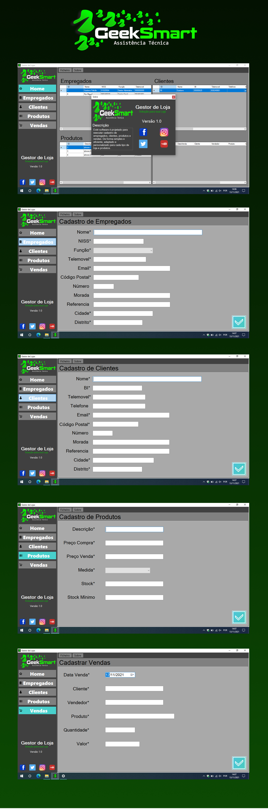

GEEK SMART
DESKTOP / UI / UX / C# / VB / XML
Você está começando seu negócio? Ou então, está há algum tempo no mercado, mas não sabe como organizar os dados do seu negócio? O Geek Smart é a solução ideal para isso, com ele você pode armazenar todos esses dados de forma prática e segura e consultá-los, se necessário. Possui um banco de dados que pode ser local ou mesmo na nuvem e totalmente adaptado, para utilizar a função touch screen. Uma ferramenta tão poderosa e ao mesmo tempo prática, para utilizá-la não é necessário nenhum treinamento técnico.
